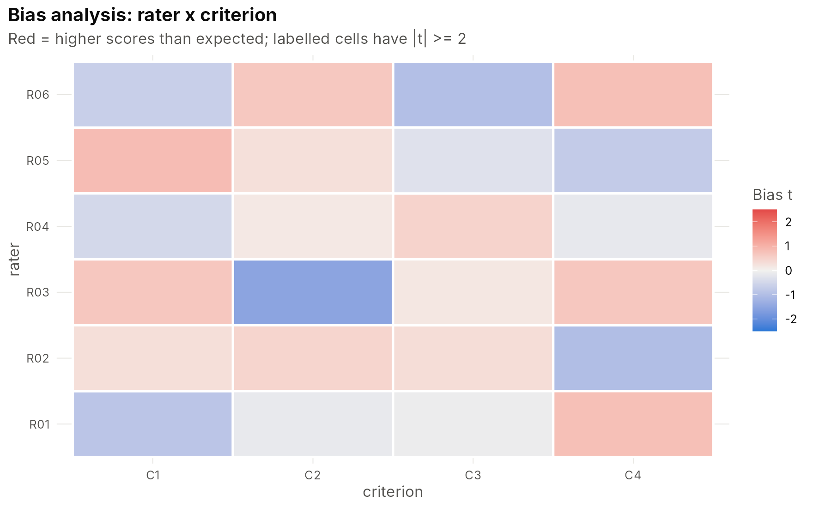

When performances are scored by raters, the score depends on the person, the rater’s severity and the difficulty of the criterion. The many-facet Rasch model (Linacre, 1989) puts all of these on one logit scale. IRTistic estimates it by marginal maximum likelihood and reports it in the layout of Linacre’s FACETS program, so FACETS users will recognise every table.
ratings <- sim_mfrm(n_person = 120, n_rater = 6, n_criterion = 4, ncat = 5, design = 0.7)
head(ratings)
#> person rater criterion score
#> 1 P001 R01 C1 3
#> 2 P002 R01 C1 1
#> 3 P003 R01 C1 1
#> 4 P004 R01 C1 1
#> 5 P005 R01 C1 3
#> 6 P006 R01 C1 2
mf <- mfrm_fit(ratings, person = "person", facets = c("rater", "criterion"), score = "score")
mf
#> <mfrmfit> many-facet Rasch (RSM)
#> 2007 ratings | person: 120 | rater: 6 | criterion: 4
#> Categories: 1,2,3,4,5 | person mean = -0.143, SD = 0.928
#> log-likelihood = -2539.764 AIC = 5105.53 BIC = 5178.39 (converged in 76 cycles)Measurement reports
rep <- facet_report(mf)
irt_table(rep)
#> Facet summary
#> Warning in do.call(data.frame, c(x, alis)): unable to translate
#> '<U+03C7><U+00B2>' to native encoding
#> Facet Elements Mean SD Mean SE Separation Strata Reliability
#> person 120 -0.14 0.98 0.30 3.11 4.49 0.91
#> rater 6 0.00 0.60 0.06 9.72 13.29 0.99
#> criterion 4 -0.00 0.74 0.05 14.87 20.16 1.00
#> <U+03C7><U+00B2> df p
#> 1080.45 119 < .001
#> 450.27 5 < .001
#> 588.24 3 < .001
#>
#> Note. Separation, strata and reliability as in FACETS; chi-square tests that all elements
#> are equal.
irt_table(rep, facet = "rater")
#> rater measurement report
#>
#> Element Measure SE Count Total score Obs. avg Fair avg Infit MNSQ Infit ZSTD
#> R01 0.80 0.07 328 758 2.31 2.20 0.93 -0.90
#> R03 0.31 0.06 332 878 2.64 2.61 0.84 -2.27
#> R06 0.28 0.06 331 891 2.69 2.64 0.95 -0.65
#> R04 -0.00 0.06 339 988 2.91 2.89 1.02 0.30
#> R05 -0.61 0.06 332 1,118 3.37 3.42 0.94 -0.81
#> R02 -0.79 0.06 345 1,207 3.50 3.57 0.94 -0.83
#> Outfit MNSQ Outfit ZSTD Flag
#> 0.96 -0.48 productive
#> 0.83 -2.40 productive
#> 0.92 -1.01 productive
#> 1.01 0.10 productive
#> 0.95 -0.66 productive
#> 0.96 -0.54 productive
#>
#> Note. Higher measures = harder to score highly on (except persons). Fair average =
#> expected score for an average element of the other facets.
irt_table(rep, facet = "categories")
#> Rating scale category statistics
#>
#> Group Category Count % Avg measure Exp measure Threshold Threshold SE
#> all 1 309 15.40 -1.51 -1.52
#> all 2 492 24.51 -0.86 -0.81 -1.60 0.08
#> all 3 521 25.96 -0.09 -0.09 -0.50 0.07
#> all 4 441 21.97 0.74 0.68 0.45 0.07
#> all 5 244 12.16 1.53 1.52 1.66 0.09
#> Disordered
#>
#>
#>
#>
#> Rater bias
bias <- mfrm_bias(mf, c("rater", "criterion"))
irt_table(head(bias, 8))
#> Bias/interaction analysis: rater <U+00D7> criterion
#>
#> rater criterion Count Observed Expected Obs - Exp Bias SE t df p
#> R03 C2 79 197 208.81 -0.15 -0.20 0.13 -1.53 78 .130
#> R02 C4 94 385 392.13 -0.08 -0.14 0.14 -1.01 93 .317
#> R06 C3 83 187 194.55 -0.09 -0.13 0.13 -0.98 82 .329
#> R01 C1 91 173 179.37 -0.07 -0.12 0.14 -0.86 90 .392
#> R05 C1 77 233 226.55 0.08 0.11 0.13 0.83 76 .409
#> R06 C4 78 279 273.12 0.08 0.10 0.13 0.78 77 .437
#> R01 C4 80 253 246.91 0.08 0.10 0.13 0.78 79 .439
#> R05 C4 90 361 366.27 -0.06 -0.10 0.14 -0.74 89 .464
#>
#> Note. Positive bias = higher scores than expected.
plot_bias(bias)
A partial credit structure for each criterion is one argument away:
mf_pcm <- mfrm_fit(ratings, "person", c("rater", "criterion"), "score",
model = "pcm", step_facet = "criterion")
anova_like <- data.frame(model = c("RSM", "PCM"), logLik = c(mf$loglik, mf_pcm$loglik),
AIC = c(AIC(mf), AIC(mf_pcm)), BIC = c(BIC(mf), BIC(mf_pcm)))
irt_table(anova_like)
#> Model logLik AIC BIC
#> RSM -2539.76 5105.53 5178.39
#> PCM -2534.60 5113.20 5236.49